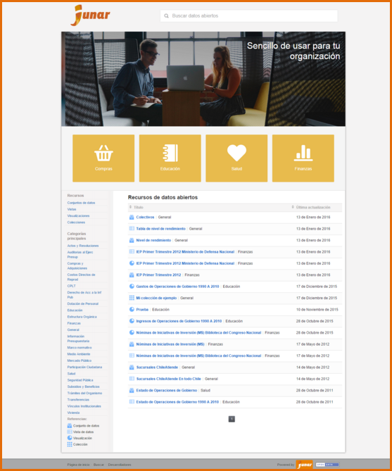
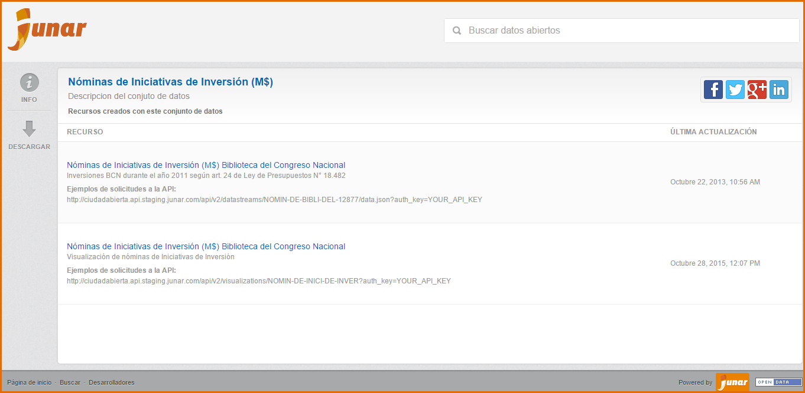
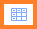
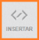
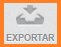
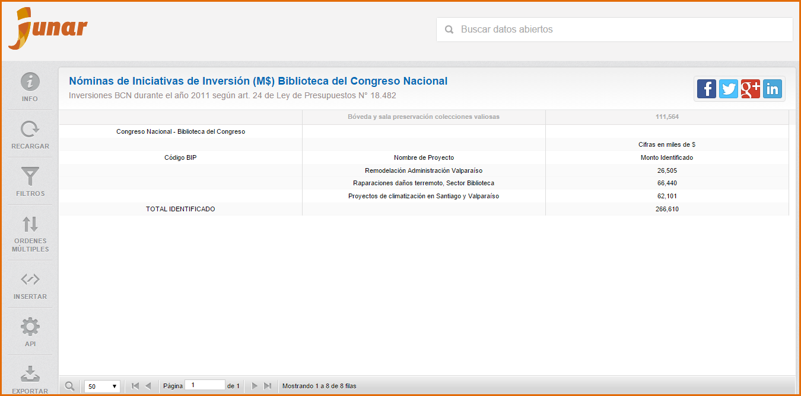

10. Portal de datos abiertos¶
Ingrese a la URL http://microsites.dev:8080/home

El sitio muestra un icono de la página web, título de bienvenida, breve introducción de lo que trata el portal de datos abiertos, catálogo de recursos publicados, filtro para la búsqueda de recursos, tipos recursos, categorías principales de los recursos y referencias.
Para acceder a los recursos del portal de datos abiertos de datos abiertos, haga click sobre el recurso requerido.
Conjunto de Datos  : El portal de datos abiertos visualiza el Conjunto de Datos con sus recursos asociados (si los tiene) y un buscador de recursos. También la opción de Compartir es una posibilidad que da Junar para mostrar a otros los recursos de tu interés de una manera sencilla. Podrá compartir vía Twitter, Facebook, Google+ y LinkedIn
: El portal de datos abiertos visualiza el Conjunto de Datos con sus recursos asociados (si los tiene) y un buscador de recursos. También la opción de Compartir es una posibilidad que da Junar para mostrar a otros los recursos de tu interés de una manera sencilla. Podrá compartir vía Twitter, Facebook, Google+ y LinkedIn  .
.
En el margen izquierdo de la visualización del Conjunto de Datos se muestran los siguientes botones:
Para acceder a la información del Conjunto de Datos presione
Para descargar el archivo del Conjunto de Datos presione

Vista : El portal de datos abiertos de datos abiertos visualiza el contenido de la Vista, un buscador de recursos y permite compartir la Vista de manera sencilla a través de Twitter, Facebook, Google+, LinkedIn .
En el margen izquierdo de la visualización de la Vista se muestran los siguientes botones:
Para acceder a la información de la Vista presione
Para actualizar el contenido de la Vista presione

Para insertar la Vista presione 
Para solicitar la Vista de datos a través de la API presione

Para exportar la Vista de datos en formato CSV, XLS/XLSx o usar Google Spreadsheet presione 

Visualización  : El portal de datos abiertos muestra la Visualización, un buscador de recursos y permite compartir la Visualización de manera sencilla a través de Twitter, Facebook, Google+, LinkedIn .
: El portal de datos abiertos muestra la Visualización, un buscador de recursos y permite compartir la Visualización de manera sencilla a través de Twitter, Facebook, Google+, LinkedIn .
En el margen izquierdo de la Visualización se muestran los siguientes botones:
- Para acceder a la información de la Visualización presione
- Para actualizar el contenido de la vista presione
- Para insertar la visualización presione
- Para solicitar la Visualización a través de la API presione
- Para exportar la Visualización en formato CSV o XLS/XLSx presione